CSGO RushB中文网
CSGO RushB中文网
反冲武器箱已经更新几天了，如你所见皮肤名仍是英文。不过V社翻译平台已经完成了中文翻译，就等游戏正式更新，在此之前让我们一睹为快。
注意：中文翻译后续可能还会改，以游戏内为准。
法玛斯 | 喵喵36
Meow 36
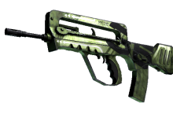
这把武器以绿色为外表，辅以数字36进行装饰。确切说，是4只猫。不过谁会真的去数呢？
加利尔 AR | 毁灭者
Destroyer
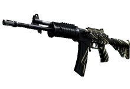
这把武器采用”DESTROYER”字样进行了自定义涂装，不过只能在某些角度可见。摧毁一切
M4A4 | 透明弹匣
Poly Mag
这把武器采用了自定义涂装，绘有一个清晰可见的塑料弹匣、褐色枪托、护木以及握把。标准操作程序
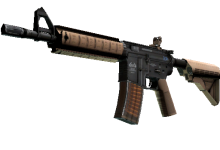
MAC-10 | 萌猴迷彩
Monkeyflage
这把Mac-10采用了自定义涂装，绘有红色、褐色和绿色的猴子。真是有胆有谋的猴子！
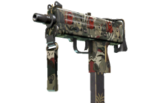
内格夫 | 丢把枪
Drop Me
这把武器的外表，多数采用棕色进行了自定义涂装，在握把间绘有一个停止标志。如果停止信号你都不服，那就用扫射让你服
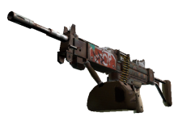
UMP-45 | 路障
Roadblock
这把武器采用了自定义涂装，绘有橙色横线以及前行箭头。建议迂回前进
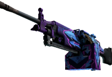
格洛克 18 型 | 冬季战术
Winterized
这把武器采用了自定义涂装，用冬季配色绘制了军用迷彩图案。不许动！
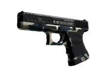
R8 左轮手枪 | 疯狂老八
Crazy 8
这把武器采用了自定义涂装，紫色枪管搭配握把上的数字8，相得益彰。灵感来源自2015年12月8日
*此为R8添加到CSGO的日期
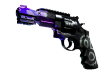
M249 | 闹市区
Downtown
枪身上绘有蓝色和粉色箭头指向各个方向。一种不同的喷涂形式
SG 553 | 青龙
Dragon Tech
这把武器采用了自定义涂装，绘有一条机械青龙。那可不是我的龙……
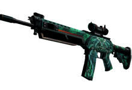
P90 | 给爷冲
Vent Rush
这把P90采用了自定义涂装，绘有胶布、管道和火焰相交的图案。“你知道自己能跑多快吗？”
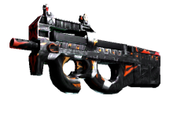
双持贝瑞塔 | 食人花
Flora Carnivora
每把贝瑞塔上都绘有3个色彩鲜艳、饥不择食的食肉植物。助力它们茁壮成长
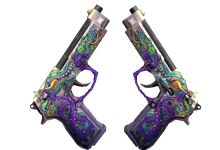
AK-47 | 可燃冰
Ice Coaled
这把武器采用醒目的绿色和蓝色渐变进行了自定义涂装。触感冰冷
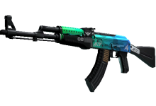
P250 | 迷人幻象
Visions
这把武器采用了自定义涂装，绘有鲜亮的彩色图案。独木难支，孤掌难鸣
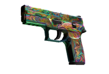
截短霰弹枪 | 么么
Kiss♥Love
这把武器采用了自定义涂装，用粉色和紫色绘制了一位天真烂漫的女生。“别对我说不；我志在必得！
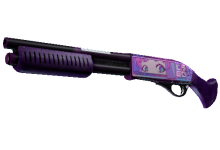
USP 消音版 | 印花集
Printstream
这把武器使用鲜明的黑白色调设计进行了自定义涂装，最后用珍珠般高光加以点缀。WHITE_1; BLACK_1; PEARLESCENT_1;
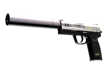
AWP | 迷人眼
Chromatic Aberration
这把武器采用了自定义涂装，采用了偏移位置的靓丽颜色设计，造就了令人称奇的视觉差。（并没有）那么清晰可见……
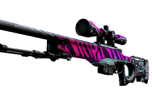